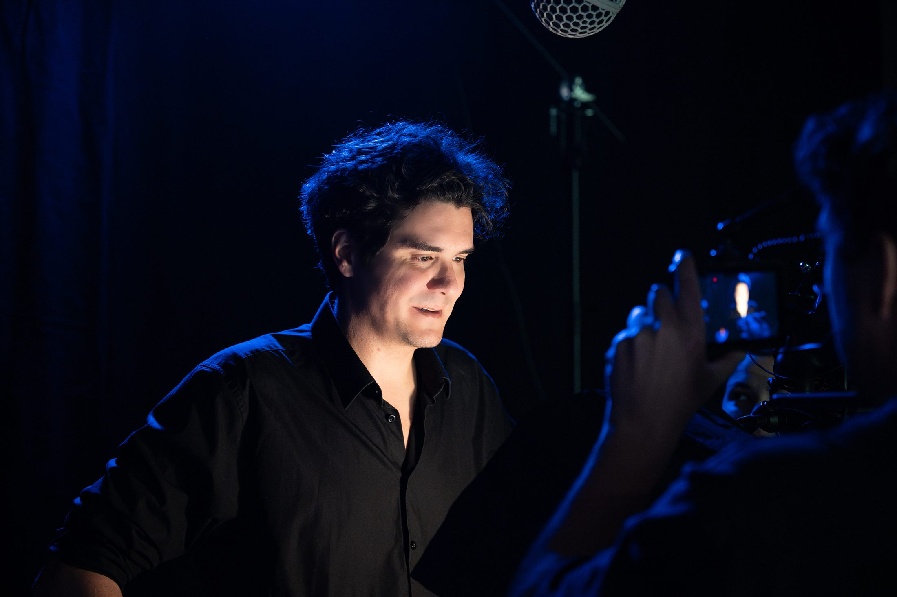
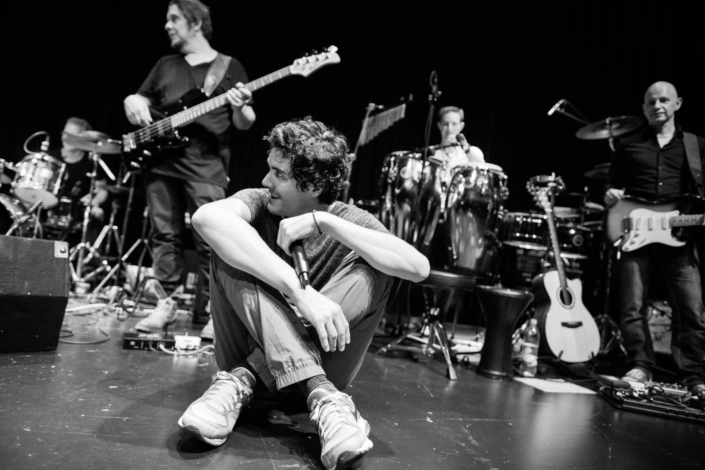
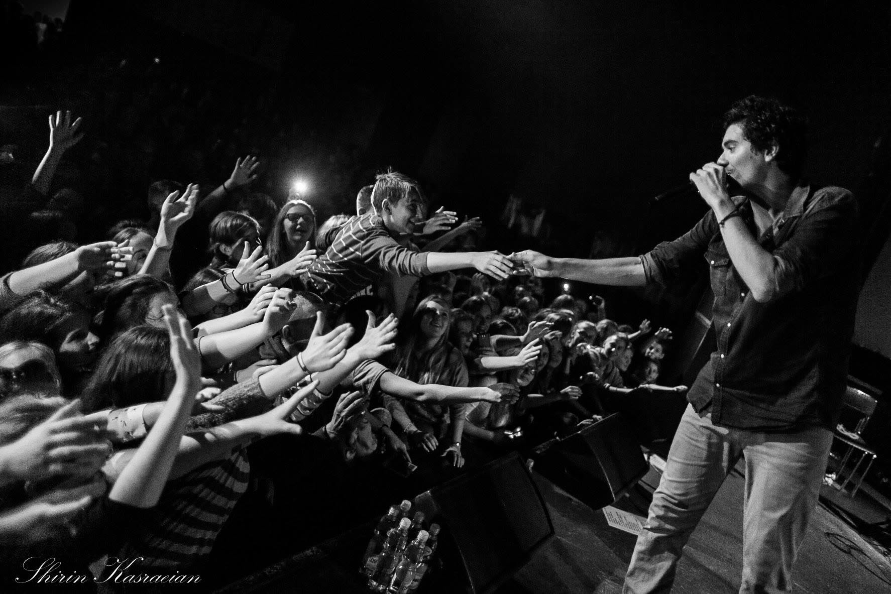
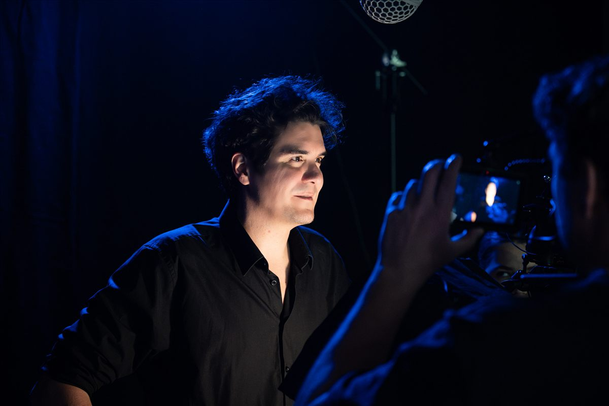
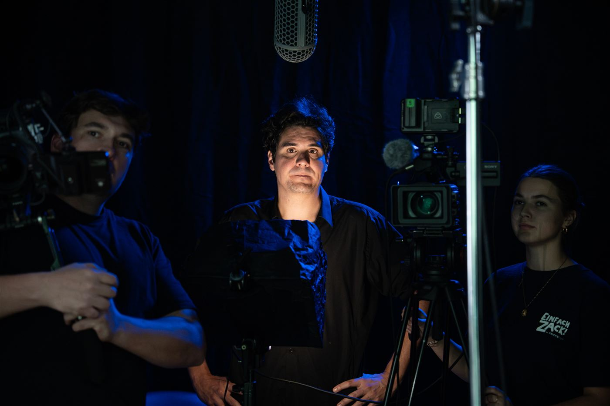
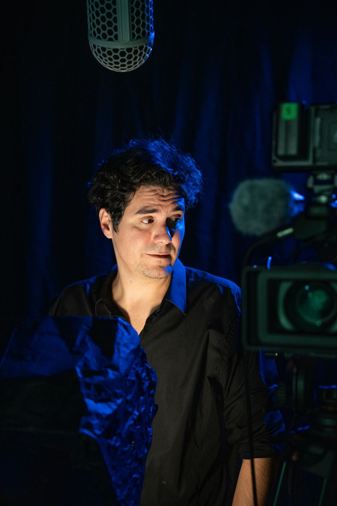
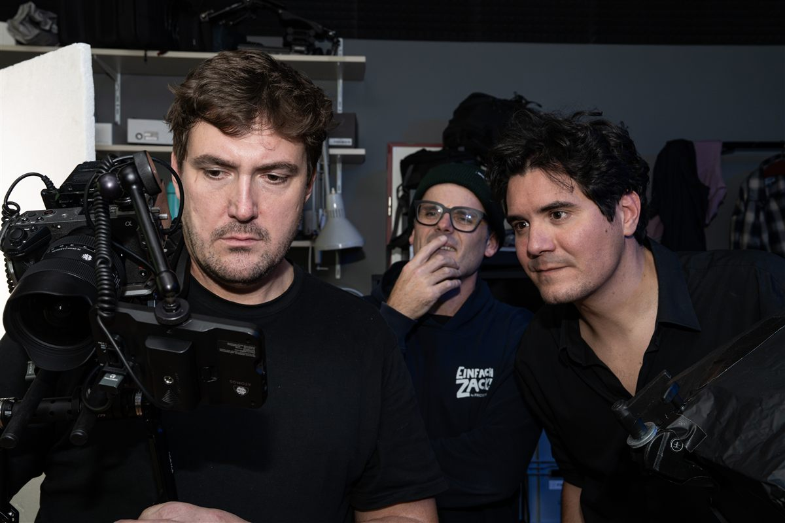
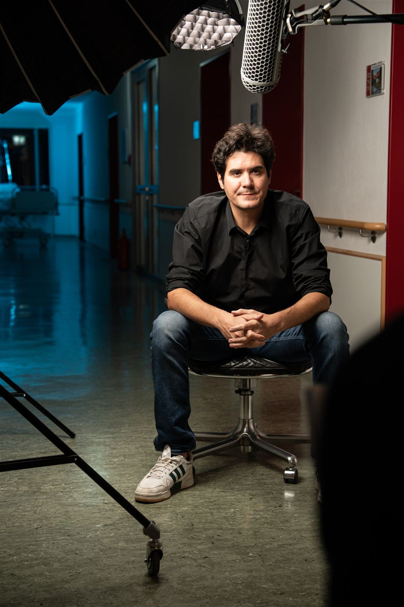
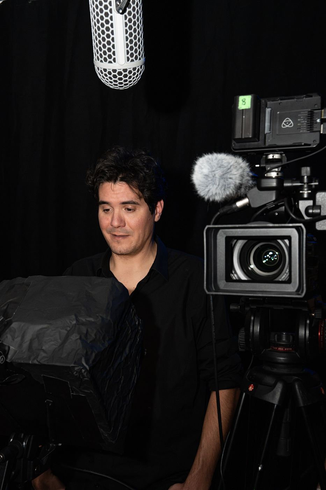

Sprecher
Werbung für TV, Radio und Online, Trailer, Voice-Over für Dokus, Imagefilme, Erklärvideos, Eventfilme, Synchron für Film und Serie.

ON AIR Sprecher aus München · seit über 20 Jahren
Willkommen, ich bin Tobias Baum, Sprecher für Werbung, Trailer, Voice-Over und Synchron sowie Produzent für Musik, Bild und Ton.
Meine Stimme u. a. für
01 — Hörproben
Videos werden erst nach deinem Klick von YouTube geladen.
Neben klassischer Werbung leiht Tobias Baum seine Stimme auch zahlreichen Dokumentationen, Reportagen, Magazinen und Reality-TV-Produktionen.
02 — Musik & Produktion

Komposition, Musik, Werbe- und Rundfunkproduktion.
Schon 2002 legte Tobias Baum gemeinsam mit seinem Vater Andreas den Grundstein für seine audiovisuelle Reise und gründete die Baum&Baum GmbH. Zwei Jahrzehnte lang prägte er die Audiowelt mit erstklassiger Radio- und Funkwerbung, bevor er das Portfolio erfolgreich um maßgeschneiderte Kompositionen und Vertonungen für Filme und Imagevideos erweiterte.
Parallel zur Studioarbeit zog es ihn auf die großen Bühnen dieser Welt: Als Musiker und Rapper stand er mit seiner Band EINSHOCH6 bei über 100 Live-Konzerten pro Jahr international im Rampenlicht.

Von 2012 bis 2019 entstand mit seiner Band EINSHOCH6 und der Redaktion Deutschkurse der Deutschen Welle das „Bandtagebuch“ – ein bis dahin einzigartiges Projekt für Deutschlernende auf der ganzen Welt. Ausgezeichnet u. a. mit dem Comenius-Award für Bildung.
Als „Musikalische Botschafter der deutschen Sprache“ folgten Tourneen rund um den Globus sowie Projekte mit der Württembergischen Philharmonie Reutlingen und dem Philharmonischen Orchester Freiburg.
Komponiert und produziert für TV-, Kino- und Online-Spots.
Heute vereint Tobias all diese Facetten in seiner Selbstständigkeit und bringt Geschichten nicht mehr nur zum Klingen, sondern auch visuell auf den Punkt.
Ob vor oder hinter der Kamera: Als erfahrener Schauspieler und Videoproduzent konzipiert und realisiert er packenden Video-Content, unter anderem im Social-Media-Bereich für verschiedenste Unternehmen. Mit jahrelanger Erfahrung und einem feinen Gespür für die Anliegen seiner Kunden arbeitet er dabei Hand in Hand mit einem eingespielten Netzwerk aus Freelancern – darunter Frickefilm und Einfach Zack.






Am Set mit dem Team von Frickefilm
04 — Leistungen
Werbung für TV, Radio und Online, Trailer, Voice-Over für Dokus, Imagefilme, Erklärvideos, Eventfilme, Synchron für Film und Serie.
Jingles, Soundlogos, Musik zum Bild, Gesang – komponiert und produziert im professionellen Tonstudio.
Radio-, Image- und TV-Spots vom Konzept über Text, Sprache und Musik bis zur fertigen Mischung.
Musikvideos, Image- und Werbefilme, Social-Media-Clips – gedreht, geschnitten, vertont.
„Ich produziere deine Sprachaufnahmen in Eigenregie direkt in meinem Studio und schicke dir die fertigen Files. Alternativ connecten wir uns live per Remote-Schaltung, damit du direkt Regie führen kannst.“
oder ruf einfach an: +49 177 8297321